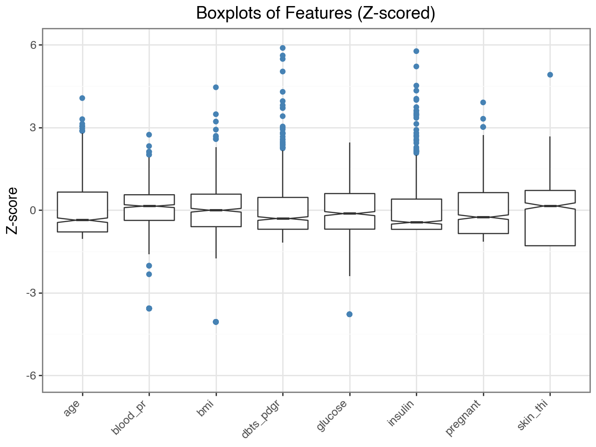
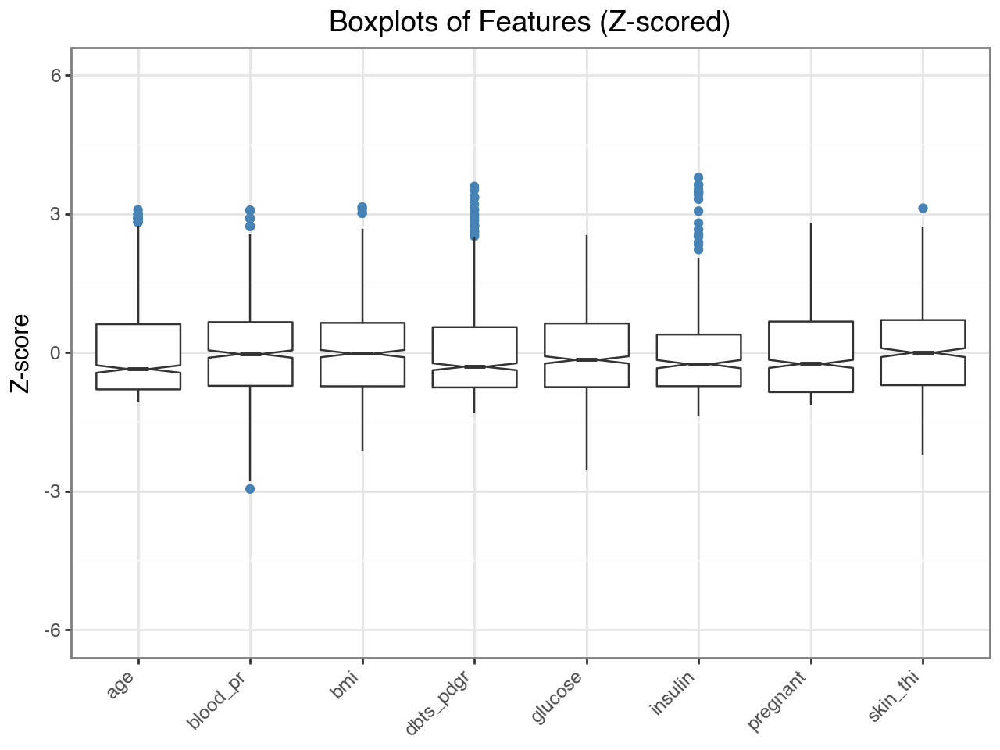
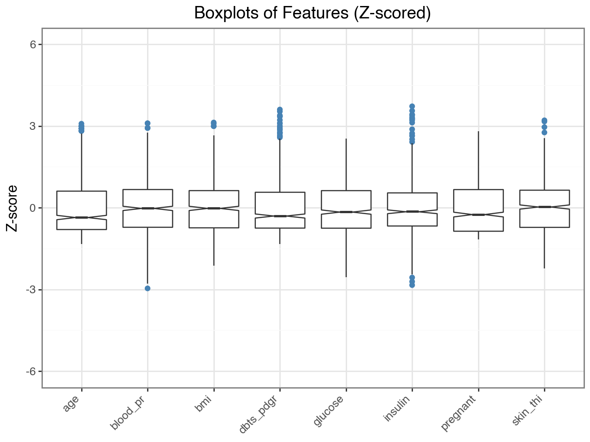
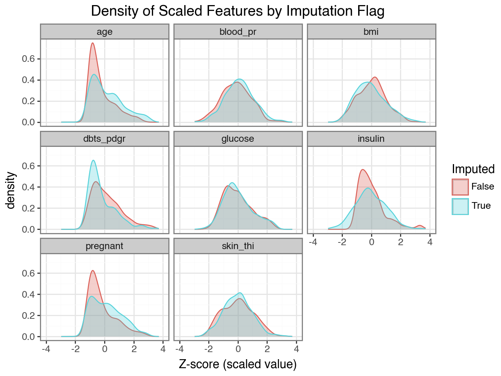
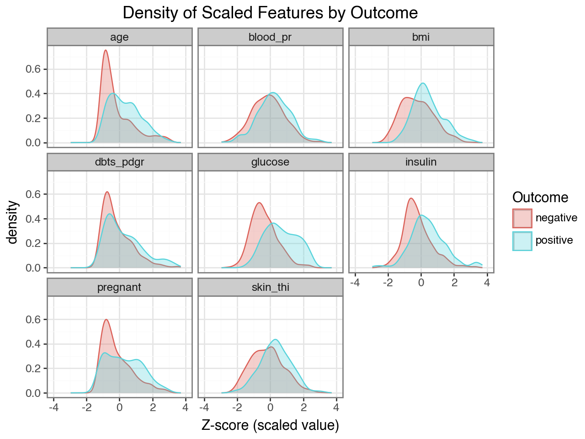
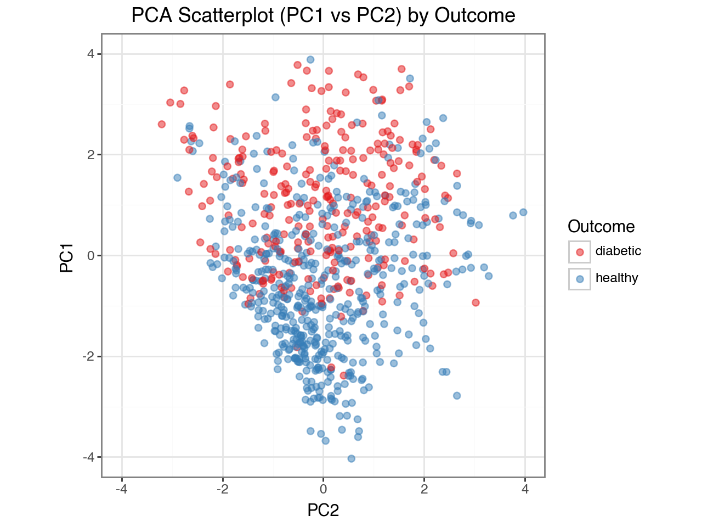
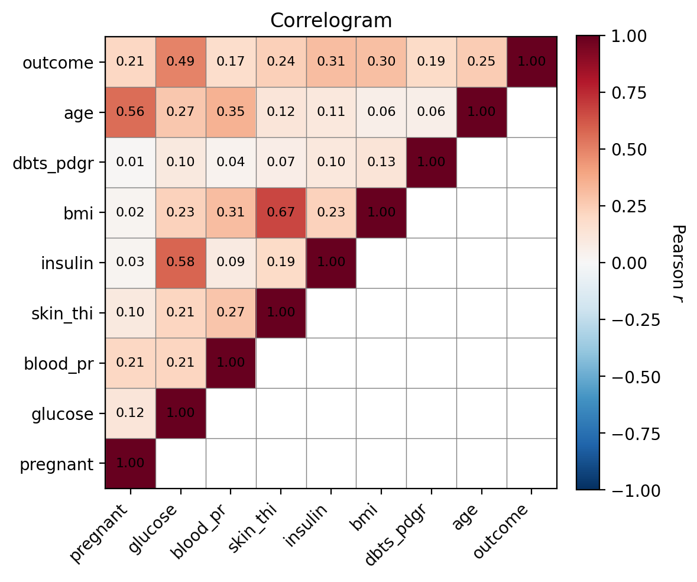
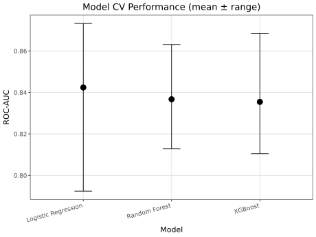
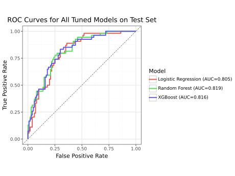
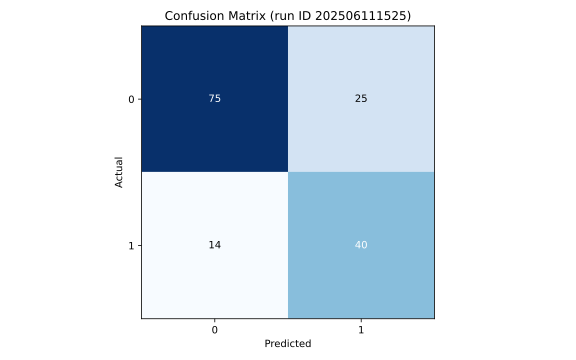

| variable | count | missing | mean | median | std | min | 25% | 50% | 75% | max | skew | kurt |
|---|---|---|---|---|---|---|---|---|---|---|---|---|
| insulin | 768.0 | 0.0 | 79.8 | 30.5 | 115.2 | 0.0 | 0.0 | 30.5 | 127.2 | 846.0 | 2.3 | 7.2 |
| dbts_pdgr | 768.0 | 0.0 | 0.5 | 0.4 | 0.3 | 0.1 | 0.2 | 0.4 | 0.6 | 2.4 | 1.9 | 5.6 |
| blood_pr | 768.0 | 0.0 | 69.1 | 72.0 | 19.4 | 0.0 | 62.0 | 72.0 | 80.0 | 122.0 | -1.8 | 5.2 |
| bmi | 768.0 | 0.0 | 32.0 | 32.0 | 7.9 | 0.0 | 27.3 | 32.0 | 36.6 | 67.1 | -0.4 | 3.3 |
| age | 768.0 | 0.0 | 33.2 | 29.0 | 11.8 | 21.0 | 24.0 | 29.0 | 41.0 | 81.0 | 1.1 | 0.6 |
| glucose | 768.0 | 0.0 | 120.9 | 117.0 | 32.0 | 0.0 | 99.0 | 117.0 | 140.2 | 199.0 | 0.2 | 0.6 |
| pregnant | 768.0 | 0.0 | 3.8 | 3.0 | 3.4 | 0.0 | 1.0 | 3.0 | 6.0 | 17.0 | 0.9 | 0.2 |
| skin_thi | 768.0 | 0.0 | 20.5 | 23.0 | 16.0 | 0.0 | 0.0 | 23.0 | 32.0 | 99.0 | 0.1 | -0.5 |
| outcome | 768.0 | 0.0 | 0.3 | 0.0 | 0.5 | 0.0 | 0.0 | 0.0 | 1.0 | 1.0 | 0.6 | -1.6 |
Pima Indians Diabetes Report
Data Processing
Raw
Summary
Outliers

Intermediate
Zeroes were set to NA in variables where inappropriate, i.e. subjects having a blood pressure of zero.
Summary
| variable | count | missing | mean | median | std | min | 25% | 50% | 75% | max | skew | kurt |
|---|---|---|---|---|---|---|---|---|---|---|---|---|
| insulin | 394.0 | 374.0 | 155.5 | 125.0 | 118.8 | 14.0 | 76.2 | 125.0 | 190.0 | 846.0 | 2.2 | 6.4 |
| dbts_pdgr | 768.0 | 0.0 | 0.5 | 0.4 | 0.3 | 0.1 | 0.2 | 0.4 | 0.6 | 2.4 | 1.9 | 5.6 |
| skin_thi | 541.0 | 227.0 | 29.2 | 29.0 | 10.5 | 7.0 | 22.0 | 29.0 | 36.0 | 99.0 | 0.7 | 2.9 |
| blood_pr | 733.0 | 35.0 | 72.4 | 72.0 | 12.4 | 24.0 | 64.0 | 72.0 | 80.0 | 122.0 | 0.1 | 0.9 |
| bmi | 757.0 | 11.0 | 32.5 | 32.3 | 6.9 | 18.2 | 27.5 | 32.3 | 36.6 | 67.1 | 0.6 | 0.9 |
| age | 768.0 | 0.0 | 33.2 | 29.0 | 11.8 | 21.0 | 24.0 | 29.0 | 41.0 | 81.0 | 1.1 | 0.6 |
| pregnant | 768.0 | 0.0 | 3.8 | 3.0 | 3.4 | 0.0 | 1.0 | 3.0 | 6.0 | 17.0 | 0.9 | 0.2 |
| glucose | 763.0 | 5.0 | 121.7 | 117.0 | 30.5 | 44.0 | 99.0 | 117.0 | 141.0 | 199.0 | 0.5 | -0.3 |
| outcome | 768.0 | 0.0 | 0.3 | 0.0 | 0.5 | 0.0 | 0.0 | 0.0 | 1.0 | 1.0 | 0.6 | -1.6 |
Outliers
Outliers Excluded
| variable | count | missing | mean | median | std | min | 25% | 50% | 75% | max | skew | kurt |
|---|---|---|---|---|---|---|---|---|---|---|---|---|
| flag_imp | 768.0 | 0.0 | 0.0 | 0.0 | 0.2 | 0.0 | 0.0 | 0.0 | 0.0 | 1.0 | 4.2 | 15.9 |
| insulin | 386.0 | 382.0 | 145.6 | 122.0 | 96.5 | 14.0 | 76.0 | 122.0 | 183.8 | 510.0 | 1.5 | 2.5 |
| dbts_pdgr | 757.0 | 11.0 | 0.5 | 0.4 | 0.3 | 0.1 | 0.2 | 0.4 | 0.6 | 1.5 | 1.2 | 1.0 |
| age | 763.0 | 5.0 | 33.0 | 29.0 | 11.4 | 21.0 | 24.0 | 29.0 | 40.0 | 68.0 | 1.1 | 0.3 |
| blood_pr | 725.0 | 43.0 | 72.3 | 72.0 | 11.6 | 38.0 | 64.0 | 72.0 | 80.0 | 108.0 | 0.1 | 0.0 |
| pregnant | 764.0 | 4.0 | 3.8 | 3.0 | 3.3 | 0.0 | 1.0 | 3.0 | 6.0 | 13.0 | 0.8 | -0.2 |
| bmi | 753.0 | 15.0 | 32.3 | 32.2 | 6.6 | 18.2 | 27.5 | 32.2 | 36.6 | 53.2 | 0.3 | -0.2 |
| glucose | 763.0 | 5.0 | 121.7 | 117.0 | 30.5 | 44.0 | 99.0 | 117.0 | 141.0 | 199.0 | 0.5 | -0.3 |
| skin_thi | 539.0 | 229.0 | 29.0 | 29.0 | 9.9 | 7.0 | 22.0 | 29.0 | 36.0 | 60.0 | 0.1 | -0.5 |
| outcome | 768.0 | 0.0 | 0.3 | 0.0 | 0.5 | 0.0 | 0.0 | 0.0 | 1.0 | 1.0 | 0.6 | -1.6 |

Imputed
Summary
| variable | count | missing | mean | median | std | min | 25% | 50% | 75% | max | skew | kurt |
|---|---|---|---|---|---|---|---|---|---|---|---|---|
| insulin | 768.0 | 0.0 | 143.2 | 128.5 | 103.2 | -149.9 | 74.7 | 128.5 | 200.0 | 527.0 | 0.7 | 1.1 |
| dbts_pdgr | 768.0 | 0.0 | 0.5 | 0.4 | 0.3 | 0.1 | 0.2 | 0.4 | 0.6 | 1.5 | 1.2 | 1.0 |
| age | 768.0 | 0.0 | 33.0 | 29.0 | 11.4 | 17.9 | 24.0 | 29.0 | 40.0 | 68.0 | 1.0 | 0.3 |
| blood_pr | 768.0 | 0.0 | 72.2 | 72.0 | 11.6 | 38.0 | 64.0 | 72.0 | 80.0 | 108.0 | 0.1 | 0.0 |
| pregnant | 768.0 | 0.0 | 3.8 | 3.0 | 3.3 | 0.0 | 1.0 | 3.0 | 6.0 | 13.0 | 0.8 | -0.2 |
| bmi | 768.0 | 0.0 | 32.4 | 32.2 | 6.7 | 18.2 | 27.5 | 32.2 | 36.6 | 53.2 | 0.4 | -0.2 |
| glucose | 768.0 | 0.0 | 121.7 | 117.0 | 30.5 | 44.0 | 99.0 | 117.0 | 141.0 | 199.0 | 0.5 | -0.3 |
| skin_thi | 768.0 | 0.0 | 28.7 | 29.0 | 9.9 | 6.6 | 21.6 | 29.0 | 35.1 | 60.4 | 0.2 | -0.3 |
| outcome | 768.0 | 0.0 | 0.3 | 0.0 | 0.5 | 0.0 | 0.0 | 0.0 | 1.0 | 1.0 | 0.6 | -1.6 |
Outliers

Univariate Distributions
By Imputation Flag

By Outcome

PCA

T-test
| feature | mean_outcome0 | mean_outcome1 | t_stat | p_value | significant | |
|---|---|---|---|---|---|---|
| 0 | glucose | 110.662751 | 142.219365 | -14.913068 | 1.812152e-41 | True |
| 1 | bmi | 30.889926 | 35.132603 | -9.012518 | 2.896490e-18 | True |
| 2 | insulin | 120.079325 | 186.213716 | -8.386379 | 6.071688e-16 | True |
| 3 | age | 30.897327 | 36.943081 | -7.329143 | 8.134674e-13 | True |
| 4 | skin_thi | 26.955282 | 31.891298 | -6.919344 | 1.204014e-11 | True |
| 5 | pregnant | 3.298000 | 4.735766 | -5.652359 | 2.724766e-08 | True |
| 6 | dbts_pdgr | 0.411659 | 0.525547 | -5.126683 | 4.365635e-07 | True |
| 7 | blood_pr | 70.754706 | 74.932827 | -4.855722 | 1.566151e-06 | True |
Correlogram

Model Comparison
Model Performance

Receiver Operator Curves

Top Performer
Logistic Regression
| run_id | champion_model_name | champion_cv_score | champion_best_params | final_test_accuracy |
|---|---|---|---|---|
| 202506110826.00 | Logistic Regression | 0.84 | {'clf__C': 0.1, 'clf__class_weight': 'balanced', 'clf__penalty': 'l1', 'clf__solver': 'liblinear'} | 0.75 |
Results
